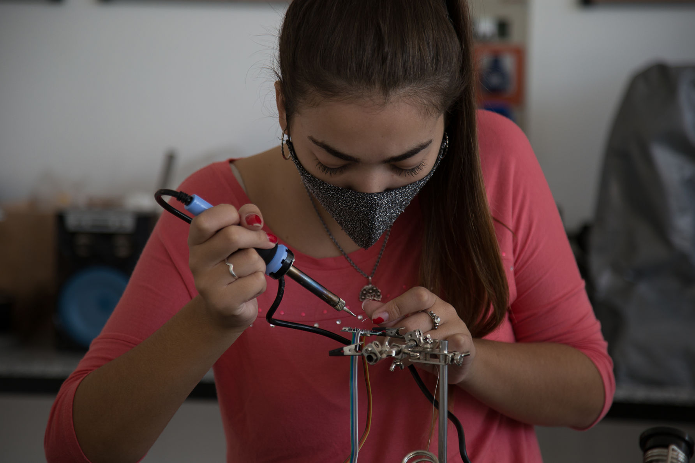
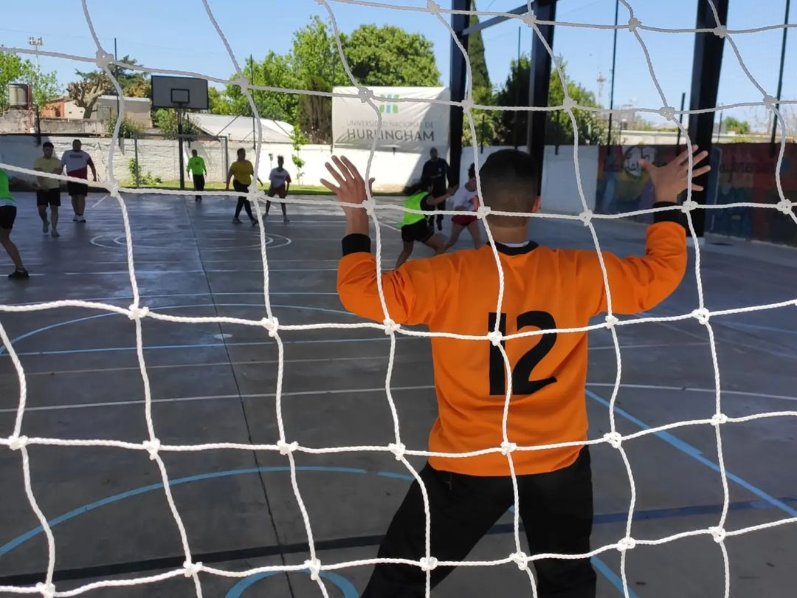
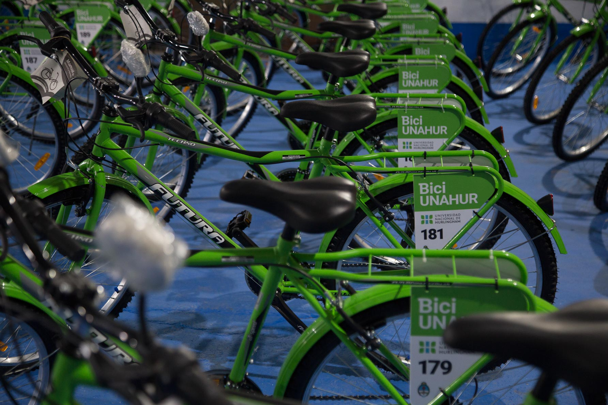

La UNAHUR es una universidad pública y gratuita que estructura su oferta
académica en base a cuatro ejes: salud, educación, producción y ciencia. Las carreras cuentan con planes de estudio modulares y
titulación intermedia, facilitando una temprana inserción laboral.
CIENCIA & TECNOLOGIA
MISIÓN
La Universidad asume a la Ciencia y la Tecnología como una de sus funciones sustantivas,
proponiendo un modelo de construcción de conocimiento colectivo, participativo, interdisciplinario y transferible.La
Secretaría de Investigación es la encargada de llevar adelante las políticas de CyT y de ejecutar un
conjunto de acciones que hacen efectivo el ejercicio de la investigación, el desarrollo y la vinculación
tecnológica y social.
Investigación sub-40
La UNAHUR cuenta con más de veinte docentes investigadores/as con dedicación exclusiva,
que trabajan todos los días en la Universidad en disciplinas muy variadas. Allí se destaca un grupo de
investigadores/as jóvenes «sub-40» que asumieron el desafío de construir su carrera académica en la
UNAHUR. Lo que tienen en común estos proyectos es que son de interés local, se desarrollan en su
totalidad en la Universidad y, además, participan en ellos estudiantes que dan así sus primeros pasos en
la carrera académica
Convocatorias de proyectos I+D propias
Desde el inicio de sus actividades, la Universidad financia proyectos de investigación
(PIUNAHUR) en todas las áreas temáticas que se consideran estratégicas para el desarrollo local y nacional. En ese
sentido, la Secretaría de Investigación realiza el acompañamiento metodológico y seguimiento para los
proyectos financiados por la UNAHUR, de manera de garantizar el pleno funcionamiento de los mismos y
monitorear los resultados esperados. Ya se han llevado a cabo seis convocatorias PIUNAHUR, financiando
un total de 87 proyectos de investigación con fondos propios.
Vinculación tecnológica
La Dirección de Vinculación Tecnológica (DVT) fue creada para propiciar de nexo entre
los diferentes actores que conforman el mapa científico, tecnológico, productivo y social local, regional y
nacional. Asimismo, trabaja de manera integrada con las áreas de vinculación tecnológica del resto de las
universidades nacionales e institutos universitarios miembros del Consejo Interuniversitario
Nacional (CIN), a través de la RedVITEC (Red de Vinculación Tecnológica de Universidades Nacionales
Argentinas).

EXTENSION UNIVERITARIA
MISIÓN
La UNAHUR asume la extensión como una herramienta efectiva para la transformación y el
desarrollo de la
comunidad a través de acciones científicas, culturales, técnicas, deportivas, de voluntariado, y/o de
capacitación. Asimismo, desde la Secretaría de Servicios a la Comunidad se trabaja en pos de una
universidad comprometida, solidaria y organizada para la construcción de una sociedad más justa e
igualitaria, mediante el diálogo permanente con instituciones y organizaciones de la región que
fortalezcan el vínculo entre la UNAHUR y su territorio.
Talleres Deportivos
Una oferta -totalmente abierta y gratuita- de más de 15 talleres deportivos para toda la
comunidad. La
misma está conformada por deportes individuales y grupales que se llevan adelante tanto en instalaciones
de la Universidad como en establecimientos deportivos de la zona.

Talleres Culturales
Con el objetivo de propiciar espacios de encuentro de las distintas expresiones
artístico-culturales, la UNAHUR ofrece una decena de talleres culturales 100% abiertos,
gratuitos y para toda la comunidad.
Universidad en los barrios
La Universidad en los Barrios, dependiente de la Secretaría de Servicios a la Comunidad de la
Universidad
Nacional de Hurlingham, es una propuesta de trabajo colectivo que pretende fortalecer los vínculos entre
la
universidad, las instituciones educativas y las organizaciones de la comunidad en general.
Centro Tecnológico para el Trabajo y la Producción
Partiendo de un estudio de necesidades de formación en el territorio, y en articulación con
el sector
productivo y del trabajo, la Dirección de Vinculación Tecnológica y el Consejo Social Comunitario, el
CTFP de la UNAHUR elabora una oferta de cursos cortos para que puedan ser articulados en trayectos que
acrediten oficios.
BECAS & BENEFICIOS
MISIÓN
La Secretaría de Bienestar Estudiantil de la UNAHUR es el área encargada de desarrollar
acciones
tendientes a mejorar las oportunidades de acceso, permanencia y graduación de los estudiantes,
enfocándose en programas de becas y beneficios. Además, desde la Secretaría se busca estimular la
formación y participación del estudiante universitario en relación al compromiso ético, en la defensa de
los valores democráticos, la sensibilidad social y la posibilidad de abordar problemáticas sociales.

Becas de ayuda económica UNAHUR
Con la misión de proporcionar acompañamiento a los estudiantes en sus trayectos educativos,
procurando la
contención y la atención de sus necesidades en los procesos de enseñanza y aprendizaje, la UNAHUR ha
desarrollado desde sus inicios una activa política de becas internas que actualmente cuenta ya con dos
convocatorias anuales
Bici UNAHUR
La iniciativa busca promover el acceso y la permanencia a los estudios superiores a
estudiantes de
pregrado y grado. Las bicicletas se otorgan por orden de prioridad socio-económica y en comodato hasta
el fin de la carrera. Una vez que los/as estudiantes se gradúen, podrán quedarse con ellas.
Pasantías
La UNAHUR recibe propuestas de empresas, organismos e instituciones que deseen establecer
convenios para
que nuestros/as estudiantes realicen pasantías educativas. Además, la Universidad posee una activa
política de pasantías internas.
IGUALDAD DE GENERO
OBJETIVOS
Promover políticas que promocionen la organización para construir e incidir en las
políticas de Estado
que garanticen los derechos de las mujeres y de la diversidad sexual.
Revisar y reflexionar críticamente acerca de las relaciones de poder implícitas en nuestros
vínculos cotidianos: familiares, laborales, sociales, académicos y políticos.
Garantizar y proteger la participación académica y política de las mujeres, tanto hacia el
interior como hacia otras esferas externas de la universidad.
Impulsar un trabajo conjunto entre las diversas carreras que ofrece UNAHUR para
transversalizar e incorporar la perspectiva de comunicación y género en los distintos trayectos de sus
currículas y en los diversos ámbitos institucionales.
Desarrollar formas adecuadas y eficaces de intervención institucional ante las distintas
formas de violencia: física, psicológica, sexual, económica, patrimonial, y simbólica.
Construir, junto a los diversos colectivos, formas del lenguaje que expresen la diversidad
sexual.
El Programa de Desarrollo de Políticas Universitarias de Igualdad de Género fue creado el
18 de noviembre de 2018 por Resolución del Consejo Superior N° 82.
El mismo surge del reconocimiento de las realidades de exclusión, discriminación y desigualdad que
afectan a las mujeres e identidades no binarias de nuestra comunidad, y se propone transformarlas
garantizando el respeto por la diversidad y los derechos humanos de todas las personas.
Para ello, busca incorporar y transversalizar la perspectiva de género en nuestra institución,
favoreciendo la desligitimación de estructuras patriarcales, heteronormativas y binarias, fuentes de
violencia y discriminación.